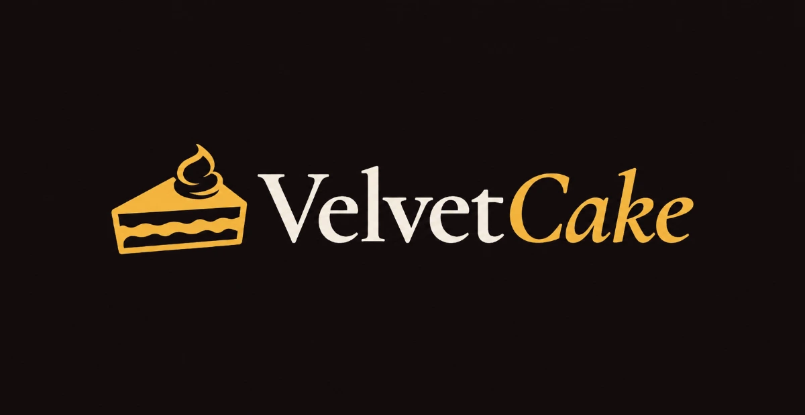

VelvetCake Lviv

A dessert catalog, master-class booking and a CRM for a Lviv confectionery

The task
At VelvetCake everything lived on Instagram: the menu, the prices and the master-class topics in posts and stories. Orders came by DM, or people wrote to the pastry chef on Telegram
Ordering that way worked. But every request went through a conversation, and a menu post slid down the feed within a week and stopped existing
I was brought in to give the confectionery a site of its own and a place to run its orders from
The solution
Not the profile moved onto a site, but a second way in beside Instagram
A catalogue of five categories, a page for every dessert, the master classes, an FAQ. The booking form sits on every page. Instagram and the DMs stayed as they were
The site is built in code, not on a builder. Everything the pastry chef changes day to day is moved into the CRM, so the site keeps running without a developer
- Five categories: cakes, bento, desserts, cupcakes, candy bars
- A page of its own for every dessert
- Master classes with booking on the site

CRM
A private part of the site. Requests from the site land in the list straight away
The ones that came by DM or on Telegram the pastry chef enters by hand. That way one list holds the whole day, not only the part that came through the form
The menu, the prices and the master-class topics are changed in the same place
The result
The menu, the master classes and the story of the confectionery now sit in one place, instead of posts you have to scroll back to
Instagram was left alone: it works exactly as it did, only the requests from it now meet in the same list as the requests from the site